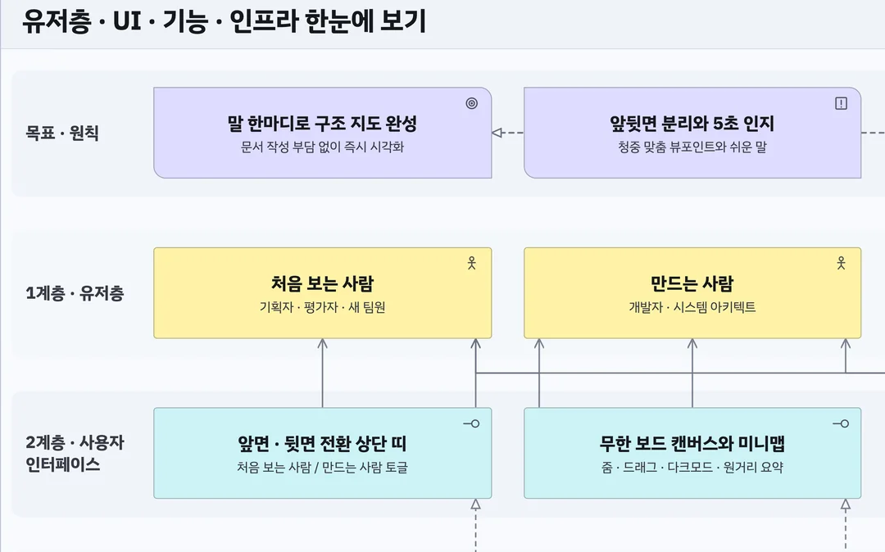

작은 목표를 큰 목표에 잇기업무 매뉴얼 v2
- 올해해가 바뀔 때
- 이번 분기1 · 4 · 7 · 10월
- 이번 달매달 첫 금요일
- 이번 주매주 일요일

코드와 문서를 읽어 아키텍처 보드 한 장을 그리는 Claude Code 스킬
멘토링을 받으며 소프트웨어 공학에 대해서 공부하고 시스템을 기획할려고 할때 어떤 기법으로 공부를 했고 작업을 위해서 시각화된 자료를 만드는 방법을 클로드 스킬로 만들어본 과정이다
AI에게 코드를 맡기는 사람이 끝까지 만들게 돕는 데스크톱 앱
캠퍼스 장소에 도착하면 선배의 쪽지가 열리는 신입생용 웹
요구 명세와 시험으로 끝을 재는 수업용 가상 쇼핑몰
작은 목표를 큰 목표에 잇고, 할 일을 나 · AI · 남으로 나눕니다.
나 · AI · 남맡는다일언제까지마감 결정풀어 준다일
일의 상태 넷: 해야 함 · 하는 중 · 기다림 · 끝
| 급함 | 안 급함 | |
|---|---|---|
| 중요 | 오늘 꼭 1 ~ 3개 | 날짜 잡기 |
| 안 중요 | 참석만 · 가장 작은 끝 · 맡기기 | 버리기 |
자료는 다 my-os 한 곳에 모인다
2027년, 온톨로지 시스템을 스스로 공부하고 AI와 지식을 공유해 나만의 매뉴얼을 온톨로지 시스템으로 정리한다. 기획은 내가, 작업은 AI로 준비해 4학년 전국 학술제에 제출해서 나간다.
“I WILL WIN. Not immediately but Definitely.”
지금 하는 것나의 OS(내 일과 지식을 한곳에서 보는 맥 앱), 그리고 2027년 1월 CES 2027 글로벌 연수 준비.